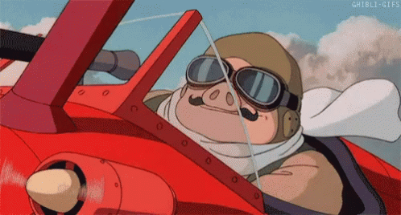

Porco Rosso c'est super, voilà merci au revoir.
Sérieusement, la relation Fio - Porco est juste trop cool à suivre et le fait que ce soit un porc, ben ça intrigue tout au long du film;
On se demande pourquoi et comment il peut y remédier "Ce qui marche pour les grenouilles ne marche pas forcément pour les cochons."
Je pense qu'il mérite sa place sur le podium des Ghiblis !

Prochains Ghiblis : Pompoko et Princesse Mononoke
Oui, cette photo date de la Sixième.
Nombre de personnes présentes ici qui étaient en Seconde 13 = Décalage César
Créateur du site : Un mec random stuck Silver I on his way to devenir Mathématicien ou génie de l'informatique, il sait pas trop.
Faits divers :
1. Vous m'excuserez auprès d'Emma, j'espère elle m'a pas trouvé bizarre quand j'ai demandé l'accès à son compte Insta *sourire gêné*
2. Normalement j'ai des lunettes,
3. Kfhj f q'jwwjzw, stzx fatsx iz rfq f inxhjwsjw q'trgwj ytzwgnqqtsfsyj yfunj ifsx qf qzrnjwj.